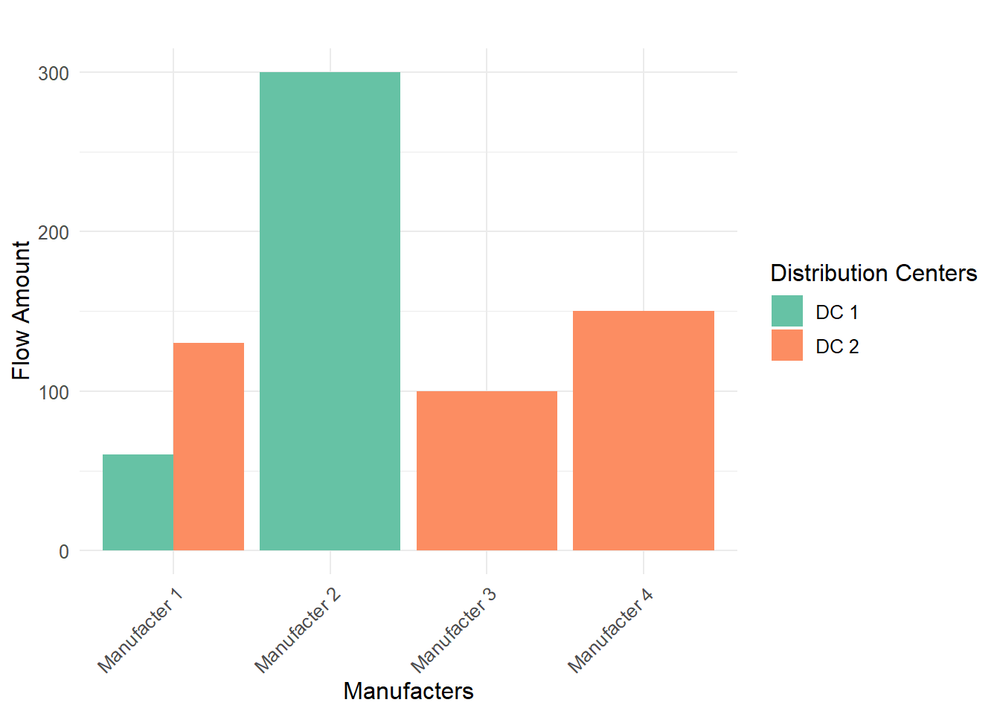

Đây là bài viết của tôi về cách sử dụng R trong ứng dụng Genetic Algorithm trong Supply Chain
1 Mô hình MILP:
Tiếp theo ta sẽ chuyển sang thuật toán tuyến tính mới là mô hình MILP.
1.1 Giới thiệu sơ lược:
MILP (Mixed Integer Linear Programming) là một phương pháp tối ưu hóa được sử dụng trong các bài toán lập kế hoạch, phân bổ tài nguyên, và quyết định trong các lĩnh vực như logistics, sản xuất, tài chính, và nhiều lĩnh vực khác. MILP là một phần mở rộng của lập trình tuyến tính (Linear Programming - LP), trong đó có các biến là số nguyên (integer variables) bên cạnh các biến liên tục (continuous variables).
Trong đó, cấu trúc của một bài toán MILP bao gồm:
Hàm mục tiêu: Là một hàm tuyến tính mà bạn muốn tối ưu hóa (tối đa hóa hoặc tối thiểu hóa).
\[
\text{Maximize or Minimize } Z = c_1x_1 + c_2x_2 + \ldots + c_nx_n
\]
Ràng buộc: Bao gồm các điều kiện tuyến tính mà các biến phải thỏa mãn.
Biến quyết định: Các biến trong bài toán có thể là:
Biến liên tục: Có thể nhận mọi giá trị thực (ví dụ: số lượng sản phẩm).
Biến nguyên: Chỉ nhận giá trị nguyên (ví dụ: số lượng xe tải).
Biến nhị phân: Chỉ nhận giá trị 0 hoặc 1 (ví dụ: có hoặc không sử dụng một nhà máy).
Mô hình MILP là một công cụ mạnh mẽ cho việc tối ưu hóa trong nhiều lĩnh vực khác nhau. Với khả năng kết hợp giữa các biến liên tục và số nguyên, MILP có thể giải quyết nhiều bài toán phức tạp mà các phương pháp tối ưu hóa khác không thể thực hiện hiệu quả. Các ứng dụng phổ biến bao gồm:
Quản lý chuỗi cung ứng: Tối ưu hóa việc phân phối hàng hóa từ các kho đến các khách hàng.
Lập kế hoạch sản xuất: Xác định số lượng sản phẩm cần sản xuất để tối đa hóa lợi nhuận hoặc giảm chi phí.
Tối ưu hóa lịch trình: Lập lịch cho nhân viên, máy móc, hoặc tài nguyên để tối ưu hóa hiệu suất.
Quy hoạch đô thị: Tối ưu hóa việc sử dụng đất và tài nguyên trong quy hoạch thành phố.
Trong R có các thư viện như lpSolve, ompr, và ROI có thể được sử dụng để giải quyết các bài toán MILP.
1.2 Ví dụ về mô hình MILP:
Gỉa sử ta có bài toán về vấn đề Transshipment có yêu cầu là tìm ra phương án vận tải tối ưu nhất để vận chuyển hàng hóa từ nhà máy (Factory) thông qua Crossdocking và đến được Distribution Center với mục tiêu là đạt chi phí thấp nhất.
Vì bài toán này thuộc dạng tuyến tính nên phương pháp MILP sẽ làm tốt hơn nhiều so với thuật toán GA bên trên. Kết quả được trình bày bên dưới đây
Code
library(ompr)library(ompr.roi)library(ROI.plugin.glpk)#Input:Supply <-c(200,300,100,150,220)Demand <-c(150,100,110,200,180)DC<-2m<-length(Supply)n<-length(Demand)Cost_CD<-read.table(text ="CD1 CD2 30 50 23 66 35 14 70 12 65 70",header = T)Cost_DC<-read.table(text ="DC1 DC2 DC3 DC4 DC5 12 25 22 40 41 65 22 23 12 15",header = T)#MILP model from the model5 <-MIPModel() %>%# Add variableadd_variable(x[i, j], i =1:m, j =1:DC) %>%add_variable(y[j, k], j =1:DC, k =1:n) %>%# minimize the cost of transshipment:set_objective(sum_expr(x[i, j]*Cost_CD[i, j],i =1:m, j =1:DC)+sum_expr(y[j, k]*Cost_DC[j, k], k =1:n, j =1:DC),"min") %>%add_constraint(sum_expr(y[j, k], j =1:DC) >= Demand[k], k =1:n) %>%# The amount of inventory in Crossdocking is smaller than production goodsadd_constraint(sum_expr(x[i, j], j =1:DC) <= Supply[i], i =1:m) %>%# The amount of is bigger than demand in DCadd_constraint(sum_expr(x[i, j], i =1:m) -sum_expr(y[j, k], k =1:n) >=0,j =1:DC) %>%add_constraint(x[i, j] >=0, j =1:DC, i =1:m)%>%add_constraint(y[j, k] >=0, j =1:DC, k =1:n)%>%#Solve the model:solve_model(with_ROI(solver ="glpk", verbose =TRUE))
Transshipment flows from Manufacturers to Distribution Centers
Manufacturer
Distribution Center
Flow Amount
Manufacturer 1
DC 1
60.00
Manufacturer 2
DC 1
300.00
Manufacturer 1
DC 2
130.00
Manufacturer 3
DC 2
100.00
Manufacturer 4
DC 2
150.00

Như vậy, chúng ta đã được học về thuật toán Genetic và mô hình MILP cũng như cách thực hiện trong Rstudio.
Nếu bạn có câu hỏi hay thắc mắc nào, đừng ngần ngại liên hệ với mình qua Gmail. Bên cạnh đó, nếu bạn muốn xem lại các bài viết trước đây của mình, hãy nhấn vào hai nút dưới đây để truy cập trang Rpubs hoặc mã nguồn trên Github. Rất vui được đồng hành cùng bạn, hẹn gặp lại! 😄😄😄
Contact Me
Contact Me
Source Code
---title: "MILP model in R"subtitle: "Việt Nam, 2024"categories: ["MILP model", "Logistics","Optimizing Supply Chain"]description: "Đây là bài viết của tôi về cách sử dụng R trong ứng dụng Genetic Algorithm trong Supply Chain"number-sections: trueformat: html: code-fold: true code-tools: truecrossref: labels: alpha a subref-labels: romanbibliography: references.bib---```{r}#| warning: false#| message: false#| echo: false#Call packagespacman::p_load(rio, here, janitor, tidyverse, dplyr, magrittr, ggplot2, gt, gtExtras)```## Mô hình MILP:Tiếp theo ta sẽ chuyển sang thuật toán tuyến tính mới là mô hình MILP.### Giới thiệu sơ lược:**MILP (Mixed Integer Linear Programming)** là một phương pháp tối ưu hóa được sử dụng trong các bài toán lập kế hoạch, phân bổ tài nguyên, và quyết định trong các lĩnh vực như logistics, sản xuất, tài chính, và nhiều lĩnh vực khác. MILP là một phần mở rộng của lập trình tuyến tính (Linear Programming - LP), trong đó có các biến là số nguyên (integer variables) bên cạnh các biến liên tục (continuous variables).Trong đó, cấu trúc của một bài toán MILP bao gồm:1. **Hàm mục tiêu**: Là một hàm tuyến tính mà bạn muốn tối ưu hóa (tối đa hóa hoặc tối thiểu hóa). $$ \text{Maximize or Minimize } Z = c_1x_1 + c_2x_2 + \ldots + c_nx_n $$2. **Ràng buộc**: Bao gồm các điều kiện tuyến tính mà các biến phải thỏa mãn. $$ a_{11}x_1 + a_{12}x_2 + \ldots + a_{1n}x_n \leq b_1 $$ $$ a_{21}x_1 + a_{22}x_2 + \ldots + a_{2n}x_n \leq b_2 $$ ... và nhiều ràng buộc khác.3. **Biến quyết định**: Các biến trong bài toán có thể là: - Biến liên tục: Có thể nhận mọi giá trị thực (ví dụ: số lượng sản phẩm). - Biến nguyên: Chỉ nhận giá trị nguyên (ví dụ: số lượng xe tải). - Biến nhị phân: Chỉ nhận giá trị 0 hoặc 1 (ví dụ: có hoặc không sử dụng một nhà máy).Mô hình **MILP** là một công cụ mạnh mẽ cho việc tối ưu hóa trong nhiều lĩnh vực khác nhau. Với khả năng kết hợp giữa các biến liên tục và số nguyên, MILP có thể giải quyết nhiều bài toán phức tạp mà các phương pháp tối ưu hóa khác không thể thực hiện hiệu quả. Các ứng dụng phổ biến bao gồm:- **Quản lý chuỗi cung ứng**: Tối ưu hóa việc phân phối hàng hóa từ các kho đến các khách hàng.- **Lập kế hoạch sản xuất**: Xác định số lượng sản phẩm cần sản xuất để tối đa hóa lợi nhuận hoặc giảm chi phí.- **Tối ưu hóa lịch trình**: Lập lịch cho nhân viên, máy móc, hoặc tài nguyên để tối ưu hóa hiệu suất.- **Quy hoạch đô thị**: Tối ưu hóa việc sử dụng đất và tài nguyên trong quy hoạch thành phố.Trong R có các thư viện như `lpSolve`, `ompr`, và `ROI` có thể được sử dụng để giải quyết các bài toán MILP.### Ví dụ về mô hình MILP:Gỉa sử ta có bài toán về vấn đề **Transshipment** có yêu cầu là tìm ra phương án vận tải tối ưu nhất để vận chuyển hàng hóa từ nhà máy (**Factory**) thông qua **Crossdocking** và đến được **Distribution Center** với mục tiêu là đạt **chi phí thấp nhất**.```{=html}<div style="text-align: center; margin-bottom: 20px;"> <img src="img/transshipment.png" style="max-width: 100%; height: auto; display: block; margin: 0 auto;"> <!-- Picture Name --> <div style="text-align: left; margin-top: 10px;"> Hình 5: Vấn đề Transshipment </div> <!-- Source Link --> <div style="text-align: right; font-style: italic; margin-top: 5px;"> Source: <a href="https://posit.co/download/rstudio-desktop/">Rstudio</a> </div></div>```Vì bài toán này thuộc dạng tuyến tính nên phương pháp MILP sẽ làm tốt hơn nhiều so với thuật toán GA bên trên. Kết quả được trình bày bên dưới đây```{r}#| warning: false#| message: false#| output: false#| fig-cap: "Biểu đồ 4: Kết quả từ mô hình MILP"library(ompr)library(ompr.roi)library(ROI.plugin.glpk)#Input:Supply <-c(200,300,100,150,220)Demand <-c(150,100,110,200,180)DC<-2m<-length(Supply)n<-length(Demand)Cost_CD<-read.table(text ="CD1 CD2 30 50 23 66 35 14 70 12 65 70",header = T)Cost_DC<-read.table(text ="DC1 DC2 DC3 DC4 DC5 12 25 22 40 41 65 22 23 12 15",header = T)#MILP model from the model5 <-MIPModel() %>%# Add variableadd_variable(x[i, j], i =1:m, j =1:DC) %>%add_variable(y[j, k], j =1:DC, k =1:n) %>%# minimize the cost of transshipment:set_objective(sum_expr(x[i, j]*Cost_CD[i, j],i =1:m, j =1:DC)+sum_expr(y[j, k]*Cost_DC[j, k], k =1:n, j =1:DC),"min") %>%add_constraint(sum_expr(y[j, k], j =1:DC) >= Demand[k], k =1:n) %>%# The amount of inventory in Crossdocking is smaller than production goodsadd_constraint(sum_expr(x[i, j], j =1:DC) <= Supply[i], i =1:m) %>%# The amount of is bigger than demand in DCadd_constraint(sum_expr(x[i, j], i =1:m) -sum_expr(y[j, k], k =1:n) >=0,j =1:DC) %>%add_constraint(x[i, j] >=0, j =1:DC, i =1:m)%>%add_constraint(y[j, k] >=0, j =1:DC, k =1:n)%>%#Solve the model:solve_model(with_ROI(solver ="glpk", verbose =TRUE))``````{r}#| layout: [[50,50]]#| warning: false#| message: false#| echo: false## Table:solution <-get_solution(model5, x[i, j]) %>%filter(value >0)library(gt)library(dplyr)library(scales) # Assuming `solution` contains the results of x[i, j]# Transform the solution into a tidy format for the tabletable_data <- solution %>%rename(Manufacturer = i, DC = j, Flow = value) %>%mutate(Manufacturer =paste("Manufacturer", Manufacturer),DC =paste("DC", DC)) %>%select(-variable)# Create a gt tabletable_data %>%gt() %>%tab_header(title =md("**Transshipment flows from Manufacturers to Distribution Centers**") ) %>%cols_label(Manufacturer =md("**Manufacturer**"),DC =md("**Distribution Center**"),Flow =md("**Flow Amount**")) %>%fmt_number(columns =c(Flow),decimals =2 ) %>%data_color(columns =c(Flow), # Use c() instead of vars()colors = scales::col_numeric(palette =c("#2ca02c","#ff7f0e"), domain =NULL) ) %>%cols_align(align ="center",columns =everything() # Applies to all columns ) %>%tab_options(table.width =pct(100) ) %>%gt_theme_espn()## Barchart:library(ggplot2)plot_data <- solution %>%rename(Manufacter= i, DC = j, Flow = value) %>%mutate(Manufacter =paste("Manufacter", Manufacter),DC =paste("DC", DC))# Create a plotggplot(plot_data, aes(x = Manufacter, y = Flow, fill = DC)) +geom_bar(stat ="identity", position ="dodge") +theme_minimal() +labs(title ="",x ="Manufacters",y ="Flow Amount",fill ="Distribution Centers") +theme(text =element_text(size =12),axis.text.x =element_text(angle =45, hjust =1)) +scale_fill_brewer(palette ="Set2")```Như vậy, chúng ta đã được học về thuật toán Genetic và mô hình MILP cũng như cách thực hiện trong Rstudio.Nếu bạn có câu hỏi hay thắc mắc nào, đừng ngần ngại liên hệ với mình qua Gmail. Bên cạnh đó, nếu bạn muốn xem lại các bài viết trước đây của mình, hãy nhấn vào hai nút dưới đây để truy cập trang **Rpubs** hoặc mã nguồn trên **Github**. Rất vui được đồng hành cùng bạn, hẹn gặp lại! 😄😄😄```{r}#| echo: false#| message: false#| warning: falsehtmltools::includeHTML("message.html")```